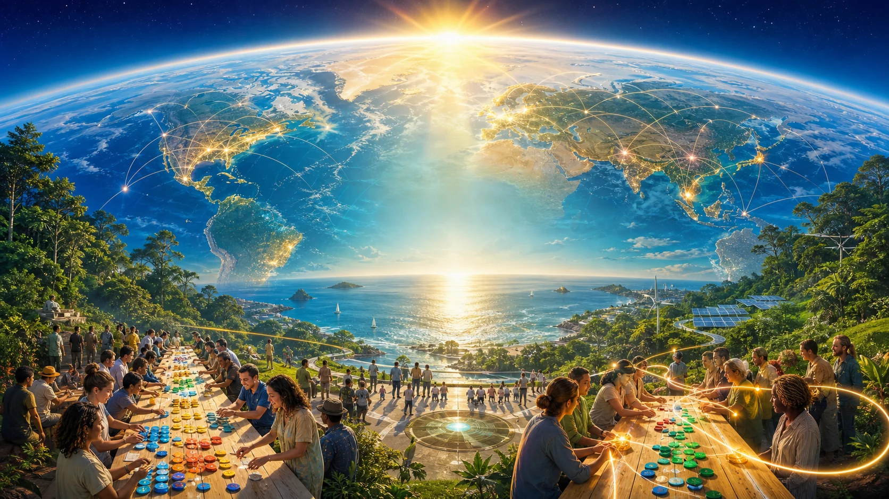

Define abundance
Write one plain definition from your place, culture, project or crew.

The world is messy. Build the abundant version anyway.
Brick by brick
Start with a table, a question, a song, a useful hour, a receipt. The giant stuff grows from evidence, not hype.
Write one plain definition from your place, culture, project or crew.
Bring people around food, music, sport, work, repair or recovery and collect the local signal.
Record effort, money, links, lessons and next moves. Keep private material out.
Connect events, travel, civic tools, legal memory, research or art with a real public URL.
The old ICO, DAO and Live Aid 2025 material is archive. GAJRA Earth did not launch that wave. The new front door is culture, local action, public traces and research-backed instruments.
System map
Fast public moves for hosts, researchers, builders, artists, organisers and curious humans.
Local tables, festivals, summits and public records that survive the day after.
C-Hour policy research, wallet transparency, contribution receipts and GAJRA token archive.
Culture, hospitality, events and bridge-building paths across the wider travel work.
Deep context turned into status, sources, risks and usable moves.
Live, research and archive labels for money, health, culture, partners and governance.
Operating idea
Start in a real place with real people and one move small enough to finish.
Share what happened, what changed, what broke and what comes next.
Turn useful work into reusable notes, templates and open links.